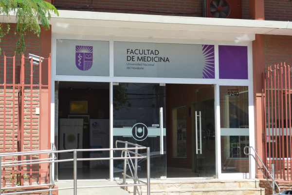

Facultad De Medicina
Medicina:
La carrera de Medicina de la Universidad Nacional del Nordeste (UNNE), dictada en la Facultad de Medicina de la UNNE en la ciudad de Corrientes, otorga el título de Médico, tiene una duración estimada de 6 años y se dicta bajo una modalidad presencial.

Estructura del Plan de Estudios (Plan 2000):
El plan de estudios está estructurado en un total de 5.600 horas distribuidas en tres ciclos formativos (Básico, Preclínico y Clínico), sumado a la Práctica Obligatoria Final. La primera materia obligatoria de la currícula es Medicina, Hombre y Sociedad (MHS), un espacio semestral con trabajo de campo en terreno.
El plan comprende materias fundamentales como Anatomía, Fisiología, Bioquímica, Histología, Patología y las grandes áreas clínicas y quirúrgicas a lo largo de los primeros cinco años, culminando en el 6to año con la Práctica Obligatoria Final (POF) de 1600 horas. El detalle completo de las asignaturas y cargas horarias de cada año se puede consultar en la documentación oficial de los ciclos correspondientes.
Organización por Ciclos Formativos:
- Ciclo Básico: Fundamentos bioquímicos, biofísicos, anatómicos y fisiológicos.
- Ciclo Preclínico: Patología general, microbiología y parasitología.
- Ciclo Clínico: Clínicas médicas y quirúrgicas, área materno-infantil y salud pública.
Información y Requisitos de Regularidad:
- Exigencia anual: Aprobar al menos dos asignaturas por año académico para mantener la regularidad.
- Materias Optativas: Completar un total de 270 horas en espacios optativos.
- Inscripción: Se gestiona mediante el Sistema de Inscripciones de la UNNE con DNI, título secundario, foto y carnet de vacunación.